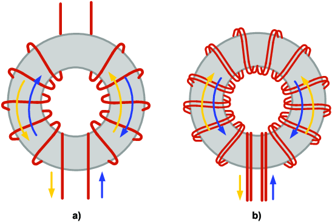
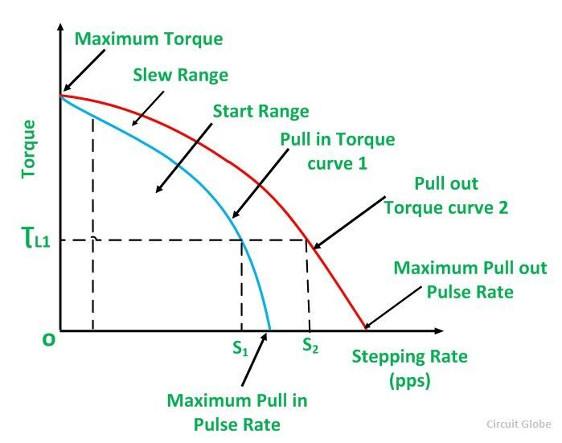
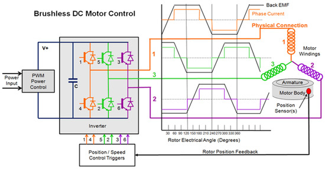
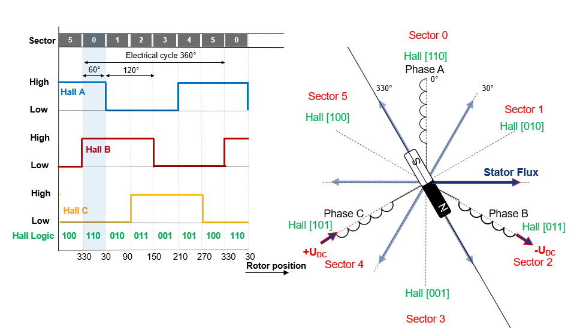
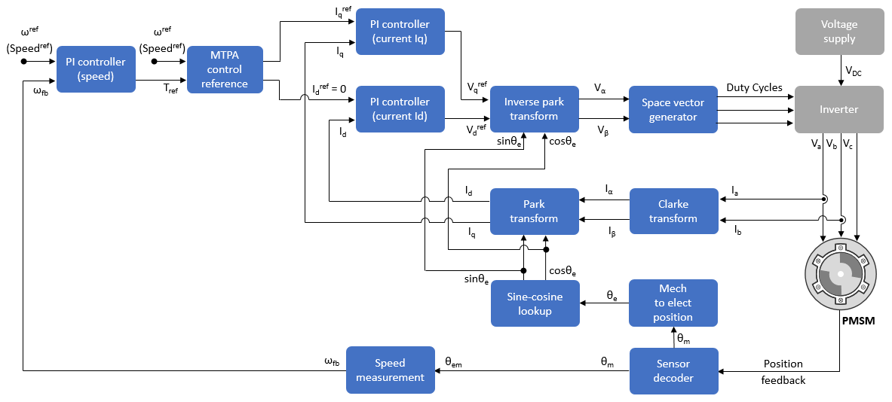
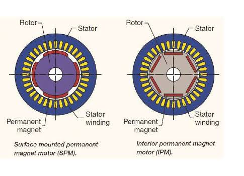
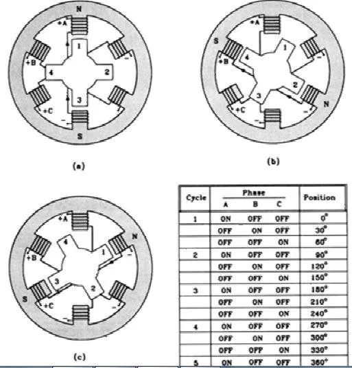
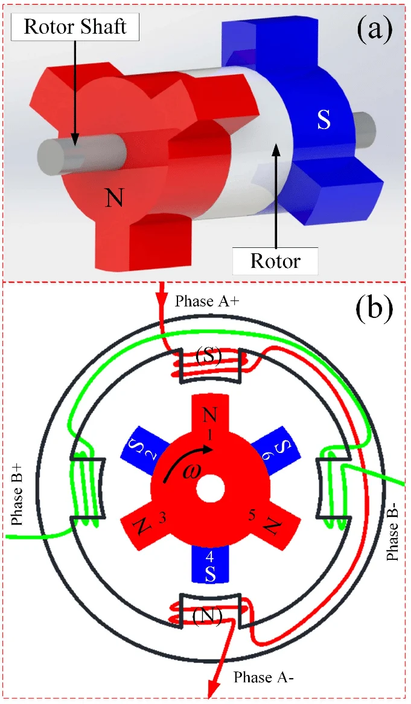
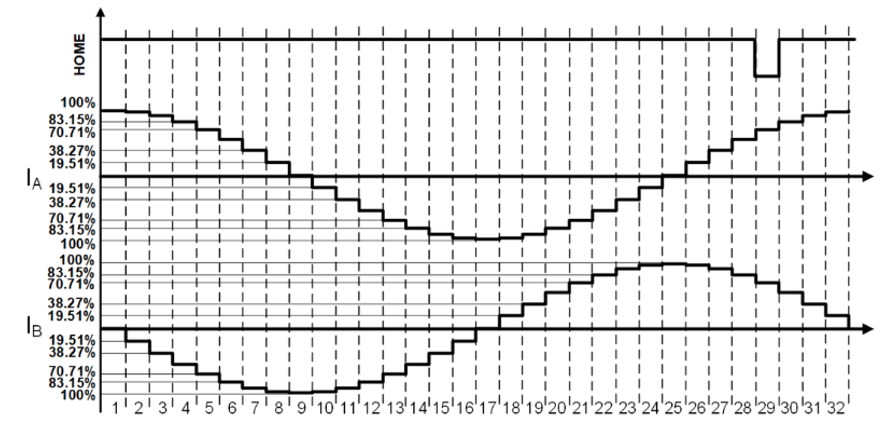

Part A — Short Answer Questions
Each question carries 3 marks · Half-page answers · Answer ALL
Answer
A Permanent Magnet Brushless DC (BLDC) motor is an electronically commutated motor with permanent magnets on the rotor and a polyphase winding on the stator. Due to the absence of mechanical brushes and commutator, it provides high efficiency, high power-to-weight ratio, and maintenance-free operation.
Key Applications:
- Electric Vehicles (EVs) & Mobility: Hub motors and central drive motors in electric two-wheelers (e-bikes, e-scooters), electric cars, and golf carts.
- Computer Peripherals & Consumer Electronics: Spindle drives for hard disk drives (HDDs), optical disc drives (CD/DVD), and cooling fans in PCs.
- Industrial Automation & Robotics: Actuators in robotic arms, feed drives in CNC machine tools, and precision conveyor systems.
- Aerospace & Drones (UAVs): Propulsion motors in quadcopters/drones, aircraft flight control surface actuators, and gyroscopes.
- Medical Equipment: Artificial blood pumps (ventricular assist devices), high-speed surgical drills, ventilators, and dental tools.
- Domestic & HVAC Appliances: Energy-efficient BLDC ceiling fans, inverter air conditioners, washing machine direct-drive drums, and refrigerators.
Upload image showing BLDC application domains
Answer
In Permanent Magnet DC (PMDC) motors, permanent magnets replace the conventional stator field windings to produce the required working magnetic flux without consuming electrical power.
Key Features & Desirable Properties:
- High Remanent Flux Density ($B_r$): Establishes a strong magnetic field in the air gap, enabling high torque output from a compact motor frame size.
- High Coercivity ($H_c$): Provides high resistance against demagnetization caused by heavy armature reaction MMF during starting, stall, and dynamic braking.
- High Maximum Energy Product ($(BH)_{\max}$): Minimizes the required volume and weight of the permanent magnet, ensuring high power density.
- High Curie Temperature & Thermal Stability: Prevents loss of magnetic properties and irreversible demagnetization across standard operating temperature ranges.
- High Electrical Resistivity: Suppresses induced eddy-current losses within the magnet core caused by stator slotting flux harmonics.
- Materials Commonly Employed: Alnico (high $B_r$, low $H_c$), Ferrites (low cost, corrosion resistant), and Rare-Earth Magnets ($ ext{NdFeB}$ and $ ext{SmCo}$) for high-performance applications.
Answer
Stator windings in stepper motors are wound on laminated salient poles and sequentially energized by DC pulses to produce incremental stepping motion. Two main types of windings are employed:
1. Unifilar (Monofilar) Winding:
- Construction: A single continuous strand of insulated copper wire is wound on each stator pole.
- Drive Requirement: Requires a bipolar drive circuit (full H-bridge) to reverse current direction through the coil in order to alternate magnetic polarity ($N \leftrightarrow S$).
- Performance: Offers $100\%$ copper utilization (entire slot area produces flux during conduction), yielding higher torque for a given motor size.
2. Bifilar Winding:
- Construction: Two identical strands of insulated wire are wound simultaneously in parallel on the same pole.
- Drive Requirement: Driven by a simple unipolar drive circuit (single switching transistor per strand). One strand produces North polarity and the second produces South polarity by carrying current in only one direction.
- Performance: Simplifies drive electronics and lowers inverter cost, but only $50\%$ of the copper is active at any instant, resulting in lower torque density.
Upload diagram showing monofilar vs bifilar windings

Answer
The dynamic characteristics of a stepper motor describe its torque-generating capability and operational boundaries as a function of the input stepping pulse frequency (pulses per second, pps):
Key Operational Boundaries & Curves:
- Pull-In Characteristic (Start-Stop Curve): Defines the maximum load torque at which the motor can start, stop, or reverse instantaneously at a given pulse rate without losing synchronism. The area enclosed below this curve is the Start-Stop Region.
- Pull-Out Characteristic (Slewing Curve): Represents the maximum torque developed when the motor is already running at that stepping rate. If load torque exceeds this curve, the motor stalls.
- Slewing Region: The operational zone located between the pull-in and pull-out curves. Inside this region, the motor can run stably, but cannot start or stop abruptly — it must be accelerated (ramped up) from the start-stop region and decelerated (ramped down) to come to a stop.
- Maximum Response Frequencies: $f_s$ is the maximum starting rate at zero load torque, and $f_m$ is the maximum slewing rate.
Upload graph showing Pull-In curve, Pull-Out curve, and Slew range vs Pulse Rate

Answer
A Switched Reluctance Motor (SRM) develops electromagnetic torque exclusively through the tendency of its salient rotor to align with the energized stator pole at the minimum reluctance position ($T = \frac{1}{2} i^2 \frac{dL}{d\theta}$).
Relevance and Role of Rotor Position Sensor:
- Phase Synchronization with Inductance Slope: Positive (motoring) torque is generated only when phase current flows during the interval of rising inductance ($\frac{dL}{d\theta} > 0$). The sensor detects the exact angle to turn on the phase switches.
- Prevention of Negative (Braking) Torque: If a phase winding remains energized when the rotor passes alignment into the falling inductance region ($\frac{dL}{d\theta} < 0$), braking torque is produced, causing deceleration and heavy losses. The sensor ensures precise turn-off.
- Converter Commutation Timing: Position sensors (Hall sensors, optical encoders, or resolvers) signal the electronic controller to trigger the turn-on angle ($\theta_{\text{on}}$) and turn-off angle ($\theta_{\text{off}}$) of the power converter switches.
- Reliable Starting & Direction Control: Stator phase sequence must be synchronized with initial rotor position to guarantee starting in the forward or reverse direction without stalling or hesitation.
Answer
Acoustic noise and mechanical vibration are primary operational challenges in a Switched Reluctance Motor (SRM) due to its doubly-salient structure and discrete phase pulsing.
Two Major Causes of Noise & Their Mitigation:
- Cause 1: Sudden Collapse of Radial Magnetic Pull:
- Mechanism: Strong radial magnetic attractive forces pull opposing stator poles inward during conduction. When the phase current is abruptly switched off at commutation, this radial force collapses to zero, causing the stator frame to spring back and oscillate violently, radiating loud acoustic noise.
- Mitigation: Use two-step demagnetization (soft commutation) to decay current gradually, or increase the radial thickness of the stator back-iron to raise the frame's mechanical resonant frequency.
- Cause 2: Torque Ripple & Torsional Vibration:
- Mechanism: Discontinuous phase excitation and non-linear magnetic saturation lead to pulsating output torque, inducing torsional oscillations along the drive shaft.
- Mitigation: Implement advanced current profiling using Torque Sharing Functions (TSF) that smoothly overlap incoming and outgoing phase currents to maintain constant total shaft torque.
Answer
A servomotor is an electromechanical actuator engineered specifically to operate within closed-loop feedback control systems to provide precise, rapid, and repeatable motion control.
Role in Automation Systems:
- Closed-Loop Position & Velocity Tracking: Continuously receives command signals from an automation controller (PLC or CNC) and compares them with real-time feedback from an encoder or resolver, driving tracking error strictly to zero.
- Fast Dynamic Acceleration & Deceleration: Designed with a long, slender rotor to achieve exceptionally low rotor moment of inertia ($J$) and high torque-to-inertia ratio ($T/J$), enabling millisecond-level start, stop, and reversal cycles.
- Linear Torque-Speed Characteristics & Stability: Exhibits a linear torque-speed curve with a steep negative slope, providing strong internal damping to prevent overshoot and hunting around the setpoint.
- Static Holding Capability: Delivers continuous rated holding torque at zero speed to lock robotic joints and machine slides firmly in place against gravitational or external cutting loads.
Answer
Servomotors (AC permanent-magnet and DC types) are essential wherever high positioning accuracy, rapid dynamic response, and programmable speed trajectories are required.
Key Applications:
- CNC Machine Tools: Multi-axis feed drives (X, Y, Z axes), tool turrets, and high-speed spindle positioning.
- Industrial Robotics: Articulated joint actuators in welding, painting, assembly, and collaborative robots (Cobots).
- Automated Packaging Machinery: High-speed carton erecting, bottle filling, label placement, and web indexing.
- Aerospace & Defense: Actuators for aircraft fly-by-wire flight control surfaces, missile fin steering, and radar antenna tracking.
- Medical & Surgical Equipment: Robotic surgical manipulators, automated patient table positioners in CT/MRI systems, and prosthetics.
- Printing & Textile Machines: High-precision multi-color printing registration, synchronized fabric feed rollers, and computer-controlled knitting machines.
Answer
A repulsion motor consists of a stator carrying a distributed single-phase AC winding and a rotor having a conventional DC armature winding connected to a commutator. The brushes are short-circuited together and physically shifted by an angle $\alpha$ from the stator field axis.
Working & Circuit Parameters:
- Equivalent Circuit:
- Stator winding is represented by series resistance $R_1$ and leakage reactance $X_1$ across AC supply $V_1$.
- Mutual inductive coupling links the stator to the short-circuited rotor circuit.
- Rotor equivalent circuit comprises referred resistance $R_2'$, referred leakage reactance $X_2'$, and speed-induced rotational back-EMF.
- Phasor Relationships:
- Stator current $\bar{I}_1$ lags supply voltage $\bar{V}_1$ by phase angle $\phi$.
- Stator impedance drop is $\bar{I}_1 (R_1 + jX_1)$.
- Rotor induced current $\bar{I}_2$ produces a rotor magnetic axis displaced by angle $\alpha$, creating mutual repulsion torque proportional to $\sin(2\alpha)$.
Upload diagram showing the repulsion motor equivalent circuit and phasor diagram

Answer
When an AC series motor operates on single-phase alternating current, the large cross-magnetizing armature reaction MMF produces severe operating drawbacks: low power factor, field distortion, and heavy brush sparking.
Relevance & Function of Compensating Winding:
- Neutralizes Armature Cross-Flux: The compensating winding is embedded in pole-face slots and connected in series with the armature such that its current flows opposite to the adjacent armature conductors, canceling cross-magnetizing flux.
- Improves Operating Power Factor ($\cos\phi$): By canceling the armature self-inductance ($L_a$), the total inductive reactance drop is reduced from $I(X_f + X_a)$ to $I(X_f + X_a - X_c) \approx I X_f$, significantly reducing the voltage-current phase angle $\phi$.
- Suppresses Brush Sparking: Eliminates flux distortion at pole tips and reduces transformer EMF induced in coils undergoing brush commutation, ensuring sparkless commutation.
Phasor Diagram Description:
Current phasor $I$ is taken as the reference. In-phase voltage drops include $I(R_a + R_{se} + R_c)$ and rotational back-EMF $E_b$. Quadrature drops include field reactance drop $j I X_{se}$ and net armature reactance drop $j I (X_a - X_c)$. The resultant terminal voltage $\bar{V}$ has a much smaller phase angle $\phi$, confirming improved power factor.
Upload phasor diagram of AC series motor with compensating winding

Answer
For a multi-stack variable reluctance stepper motor, each stack represents one phase, and the stator poles of adjacent stacks are angularly displaced from one another.
Formula:
Where:
$N_r$ = Number of rotor teeth per stack = $10$
Step-by-Step Derivation & Calculation:
- Rotor Tooth Pitch ($\tau_r$): The angular distance between adjacent rotor teeth is: $$\tau_r = \frac{360^\circ}{N_r} = \frac{360^\circ}{10} = 36^\circ$$
- Angular Stack Shift: In a 3-stack configuration, the stator pole teeth of successive stacks are shifted by: $$\text{Shift} = \frac{\tau_r}{m} = \frac{36^\circ}{3} = 12^\circ$$
- Step Angle Calculation: $$\beta = \frac{360^\circ}{3 \times 10} = \frac{360^\circ}{30} = 12^\circ$$
Conclusion: The step angle $\beta = 12^\circ$. Energizing the stacks in sequence (Stack 1 $\rightarrow$ Stack 2 $\rightarrow$ Stack 3) produces a step rotation of $12^\circ$ per excitation step.
Answer
Stepper motors operate in distinct stepping modes determined by the sequence and nature of stator winding excitation:
1. Full-Step Mode:
- The motor advances by its fundamental step angle $\beta$ per input pulse.
- 1-Phase-ON (Wave Drive): Only one phase winding is energized at a time ($A \rightarrow B \rightarrow C \rightarrow D$). Low power consumption, but lower holding torque.
- 2-Phase-ON: Two adjacent phase windings are energized simultaneously ($AB \rightarrow BC \rightarrow CD \rightarrow DA$). Produces $\approx 41\%$ higher holding torque.
2. Half-Step Mode:
- Excitation alternates between 1-phase-on and 2-phase-on in sequence: $A \rightarrow AB \rightarrow B \rightarrow BC \rightarrow C \dots$
- The step angle is halved: $\beta_{\text{half}} = \frac{\beta}{2}$.
- Doubles the angular resolution and significantly suppresses mechanical ringing and resonance.
3. Microstepping Mode:
- Phase currents are continuously varied in fine sinusoidal and cosinusoidal steps using PWM H-bridge drivers instead of sharp on/off switching.
- The resultant stator magnetic field rotates smoothly in small fractions ($1/4, 1/8, 1/16, \dots 1/256$ of a full step).
- Completely eliminates low-speed stepping vibrations, eliminates acoustic noise, and provides ultra-high positioning accuracy.
Answer
A Synchronous Reluctance Motor (SynRM) develops torque through rotor magnetic saliency ($L_d > L_q$) when driven by balanced polyphase AC.
Phasor Diagram Analysis:
- Reference Axes: The direct axis ($d$-axis) aligns with the rotor's minimum reluctance path, and the quadrature axis ($q$-axis) is located at $90^\circ$ electrical along the maximum reluctance path.
- Current Decomposition: Stator current phasor $\bar{I}_s$ is positioned at an internal current angle $\beta$ relative to the $d$-axis: $$I_d = I_s \cos\beta, \quad I_q = I_s \sin\beta$$
- Voltage Equations:
$$V_d = I_d R_s - I_q X_q$$ $$V_q = I_q R_s + I_d X_d$$ $$\bar{V}_s = \bar{I}_s R_s + j I_d X_d + j I_q X_q$$
- Developed Torque:
$$T_e = \frac{3}{2} P (L_d - L_q) I_d I_q = \frac{3}{4} P (L_d - L_q) I_s^2 \sin(2\beta)$$
A high saliency ratio ($L_d / L_q > 4$) is critical to minimize the power angle $\delta$, improve power factor, and maximize torque density.
Upload: SynRM phasor diagram showing V, I_s, d-axis, q-axis, δ (torque angle), β (current angle), X_d·i_d and X_q·i_q drops

Answer
Acoustic noise and mechanical vibration are primary operational challenges in a Switched Reluctance Motor (SRM) due to its doubly-salient structure and discrete phase pulsing.
Two Major Causes of Noise & Their Mitigation:
- Cause 1: Sudden Collapse of Radial Magnetic Pull:
- Mechanism: Strong radial magnetic attractive forces pull opposing stator poles inward during conduction. When the phase current is abruptly switched off at commutation, this radial force collapses to zero, causing the stator frame to spring back and oscillate violently, radiating loud acoustic noise.
- Mitigation: Use two-step demagnetization (soft commutation) to decay current gradually, or increase the radial thickness of the stator back-iron to raise the frame's mechanical resonant frequency.
- Cause 2: Torque Ripple & Torsional Vibration:
- Mechanism: Discontinuous phase excitation and non-linear magnetic saturation lead to pulsating output torque, inducing torsional oscillations along the drive shaft.
- Mitigation: Implement advanced current profiling using Torque Sharing Functions (TSF) that smoothly overlap incoming and outgoing phase currents to maintain constant total shaft torque.
Answer
A linear motor produces direct linear thrust through electromagnetic interaction, eliminating rotary-to-linear conversion hardware.
Classification & Example Applications:
- Linear Induction Motor (LIM):
- Principle: Polyphase AC primary creates a linear traveling magnetic field, inducing currents in a conductive secondary reaction plate (copper/aluminum on steel).
- Application: Automated urban rapid transit trains (e.g., Vancouver SkyTrain) and automated baggage handling conveyors.
- Linear Synchronous Motor (LSM):
- Principle: 3-phase AC guideway primary produces a traveling magnetic field that locks synchronously with vehicle-mounted permanent magnets or superconducting electromagnets.
- Application: High-speed magnetic levitation (Maglev) trains (e.g., Shanghai Maglev) and aircraft carrier catapult launchers.
- Linear DC Motor (LDM):
- Principle: Stationary permanent magnet track interacting with a moving armature coil fed with DC via brushes or flexible leads.
- Application: Precision read/write head positioning in computer disk drives and semiconductor wafer stages.
- Linear Stepper Motor:
- Principle: Linear toothed track and mover operating on variable reluctance or hybrid stepping principles for discrete positional increments.
- Application: High-precision X-Y plotting tables and automated pick-and-place component mounters.
Answer
A Linear Induction Motor (LIM) provides major operational and mechanical benefits over conventional rotary motors coupled to mechanical converters (rack-and-pinions or ball screws):
Key Advantages:
- Direct Linear Thrust (Zero Mechanical Conversion Loss): Eliminates rotary-to-linear mechanical hardware (gears, couplings, lead screws, and belts), completely eliminating mechanical backlash, elastic compliance, and transmission friction.
- High Linear Speed & Acceleration: Velocity is governed by linear synchronous speed $v_s = 2\tau f$ and is not restricted by centrifugal forces or wheel-rail adhesion limits, allowing speeds exceeding $400\text{ km/h}$.
- Low Maintenance & High Reliability: Contactless electromagnetic force generation across the air gap eliminates sliding mechanical contact, mechanical wear, and routine lubrication requirements.
- Immunity to Wheel Slippage / Independent of Adhesion: Thrust is generated electromagnetically in the air gap, enabling trains to climb steep gradients ($> 6\%$) and brake reliably under wet or icy track conditions.
- Inexpensive Track Construction: The stationary secondary track consists of simple aluminum sheets backed by solid mild steel, making long transportation guideways highly cost-effective.
Answer
Operating an unmodified DC series motor directly on single-phase AC results in severe core overheating, unacceptable brush sparking, and an extremely poor power factor.
Required Modifications:
- Complete Lamination of Stator Yoke and Field Poles: The entire stator core and pole shoes must be assembled from thin, insulated silicon-steel laminations to suppress large eddy-current losses produced by the alternating field flux.
- Reduction of Field Winding Turns: Field turns are kept low to minimize field inductive reactance ($X_f = 2\pi f L_f$). This significantly reduces total internal reactance drop and raises the operating power factor ($\cos\phi$).
- Use of a Very Small Air Gap: Since field turns are reduced, the air gap is made as narrow as mechanically possible to maintain high air-gap flux density with fewer ampere-turns.
- Addition of Compensating Windings: Placed in pole-face slots to neutralize armature cross-magnetizing reactance ($X_a$), keeping the net machine reactance low and preventing commutation sparking.
- High-Resistance Carbon Brushes & Commutator Leads: High-contact-resistance brushes and resistive connecting leads are used to limit large circulating short-circuit currents induced by transformer action in coils undergoing brush commutation.
Answer
A comparison of the torque-speed characteristics of a single-phase induction motor and a hysteresis motor illustrates fundamental differences in torque generation and speed regulation:
| Comparison Parameter | Single-Phase Induction Motor | Hysteresis Motor |
|---|---|---|
| Starting Torque | Zero inherently; moderate starting torque achieved using auxiliary winding and capacitor ($T_{\text{st}} \propto V^2$). | High starting torque equal to full-load running torque ($T_{\text{st}} \approx T_{\text{fl}}$) from standstill to $N_s$. |
| Running Speed | Sub-synchronous speed ($N < N_s$); speed decreases with increasing mechanical load due to slip $s$. | Runs at strictly constant synchronous speed ($N = N_s$) independent of load variations up to pull-out torque. |
| Torque-Speed Profile | Non-linear curve; rises to a maximum breakdown torque and drops sharply to zero at synchronous speed $N_s$. | Perfectly flat, horizontal straight-line characteristic ($T = \text{constant}$) from standstill to synchronous speed. |
| Pull-In Transition | Cannot pull into synchronous speed; operates strictly on induction slip. | Accelerates smoothly on hysteresis torque and locks into synchronism purely by magnetic retentivity. |
| Acoustic Noise & Vibration | Produces noticeable magnetic hum and vibration due to double-frequency pulsating torque. | Completely silent and vibrationless due to smooth, unslotted cylindrical rotor geometry. |
Upload: Overlay plot — single-phase IM S-curve vs flat hysteresis torque line, both up to N_s, showing synchronisation of hysteresis motor

Module I — BLDC Motor & Permanent Magnet Synchronous Motor
BLDC construction, commutation, control · PMSM principle, self-control scheme, sensor-less control
Full Page Answer (14 Marks)
A Permanent Magnet Brushless DC (BLDC) motor operates through electronic commutation provided by a three-phase voltage source inverter (VSI) synchronized with rotor position signals detected by Hall-effect sensors.
Upload: BLDC motor cross-section + inverter circuit + commutation waveforms for 180° drive

1. Motor Construction & Inverter Configuration:
- Stator: Houses a balanced 3-phase star-connected winding ($A, B, C$) designed to produce trapezoidal back-EMF waveforms with $120^\circ$ flat tops.
- Rotor: Carries surface-mounted high-energy permanent magnets ($ ext{NdFeB}$ or $ ext{SmCo}$) forming $2P$ poles.
- Position Sensors: Three Hall-effect sensors ($H_1, H_2, H_3$) mounted at $120^\circ$ electrical intervals along the stator detect the rotor magnetic poles.
- Inverter Circuit: A 3-phase six-switch inverter:
- Upper switches: $S_1, S_3, S_5$ (connected to positive DC rail $+V_{dc}$).
- Lower switches: $S_2, S_4, S_6$ (connected to negative DC rail $-V_{dc}$).
- Antiparallel freewheeling diodes ($D_1$ to $D_6$) provide paths for inductive phase current decay.
2. Principle of $180^\circ$ Commutation Mode:
In $180^\circ$ conduction mode, each power electronic switch is turned ON for an electrical interval of $180^\circ$. At any given instant, exactly three switches are conducting simultaneously (either two upper and one lower switch, or one upper and two lower switches). The $360^\circ$ electrical cycle is divided into six distinct $60^\circ$ sectors:
| Sector | Interval | Active Switches (3 ON) | Conducting Phases | Hall State ($H_1 H_2 H_3$) |
|---|---|---|---|---|
| 1 | $0^\circ - 60^\circ$ | $S_1, S_6, S_5$ | Phases A & C to $+V_{dc}$, Phase B to $-V_{dc}$ | 1 0 1 |
| 2 | $60^\circ - 120^\circ$ | $S_1, S_2, S_3$ | Phase A to $+V_{dc}$, Phases B & C to $-V_{dc}$ | 1 0 0 |
| 3 | $120^\circ - 180^\circ$ | $S_3, S_2, S_5$ | Phases B & C to $+V_{dc}$, Phase A to $-V_{dc}$ | 1 1 0 |
| 4 | $180^\circ - 240^\circ$ | $S_3, S_4, S_5$ | Phase B to $+V_{dc}$, Phases A & C to $-V_{dc}$ | 0 1 0 |
| 5 | $240^\circ - 300^\circ$ | $S_5, S_4, S_1$ | Phases C & A to $+V_{dc}$, Phase B to $-V_{dc}$ | 0 1 1 |
| 6 | $300^\circ - 360^\circ$ | $S_5, S_6, S_1$ | Phase C to $+V_{dc}$, Phases A & B to $-V_{dc}$ | 0 0 1 |
3. Electromagnetic Torque Generation:
- Stator MMF Vector: The simultaneous conduction of three phases establishes a resultant stator magnetic field vector $\vec{B}_s$ that advances in discrete $60^\circ$ electrical steps around the air gap.
- Magnetic Interaction: The rotor permanent magnet field $\vec{B}_r$ attempts to align with the stator field, generating electromagnetic alignment torque: $$\vec{T}_e = \vec{B}_r \times \vec{B}_s \implies T_e = k B_r B_s \sin\delta$$ Where $\delta$ is the torque angle maintained close to $90^\circ$ through continuous Hall sensor commutation.
- Total Output Power and Torque Expression:
$$P_e = e_a i_a + e_b i_b + e_c i_c = T_e \cdot \omega_m$$ $$T_e = \frac{e_a i_a + e_b i_b + e_c i_c}{\omega_m}$$With ideal trapezoidal flat-top back-EMF ($E$) and current magnitude ($I$), torque is smooth and ripple-free: $$T_e = 2 K_t I$$
Upload: Hall sensor output, phase current waveforms and switching table

Answer
In sensor-less control of a Permanent Magnet Synchronous Motor (PMSM), physical shaft position encoders or resolvers are eliminated. Rotor position ($\hat{\theta}_r$) and angular velocity ($\hat{\omega}_r$) are extracted in real time from measured stator voltages and currents.
1. Back-EMF Based Rotor Position Estimation:
In the stationary two-phase $\alpha-\beta$ reference frame, the stator voltage equations of a surface PMSM are:
Where the back-EMF components induced by the permanent magnet flux linkage $\psi_{pm}$ are:
Estimated rotor position angle is extracted through arctangent demodulation:
2. Sensorless Control Block Diagram Structure:
- Outer Speed Control Loop: Reference speed $\omega^*$ is compared with estimated rotor speed $\hat{\omega}_r$. The speed error is processed by a PI Speed Controller to produce the quadrature-axis reference torque current ($i_q^*$).
- Direct-Axis Reference Current: For surface PMSM, $i_d^* = 0$ to achieve Maximum Torque Per Ampere (MTPA).
- Inner Current Loops: Clarke transform converts measured phase currents ($i_a, i_b, i_c$) into ($i_\alpha, i_\beta$). Park transformation using estimated angle $\hat{\theta}_r$ converts them into rotating $d-q$ currents ($i_d, i_q$). PI controllers generate voltage references ($v_d^*, v_q^*$).
- Observer / Estimator Block: A Sliding Mode Observer (SMO) or Extended Kalman Filter (EKF) estimates back-EMF, filtering out inverter switching harmonics and outputting robust values of $\hat{\theta}_r$ and $\hat{\omega}_r$.
- Inverter Modulation: Inverse Park transform converts ($v_d^*, v_q^*$) back to ($v_\alpha^*, v_\beta^*$), which are synthesized by Space Vector PWM (SVPWM) driving the inverter switches.
Upload: Complete block diagram of PMSM sensor-less FOC control

Answer
A Permanent Magnet Synchronous Motor (PMSM) is a polyphase AC synchronous machine that combines the sinusoidal field distribution of conventional synchronous motors with high-coercivity permanent magnet rotor excitation.
1. Constructional Details:
- Stator: Built from thin, insulated silicon-steel laminations with open or semi-closed slots housing a standard balanced 3-phase distributed AC winding (spaced $120^\circ$ electrical apart). The winding is configured to produce a sinusoidal rotating air-gap MMF wave.
- Rotor: Constructed with high-energy permanent magnets ($ ext{NdFeB}$ or $ ext{SmCo}$) to establish excitation flux without rotor field windings or slip rings. Classified into two primary configurations:
- Surface Permanent Magnet (SPM) Rotor: Arc-shaped permanent magnet tiles are bonded onto the outer cylindrical surface of the rotor iron core. The magnetic permeability of magnets is close to that of air ($\mu_r \approx 1$), resulting in a uniform effective air gap ($L_d \approx L_q$).
- Interior Permanent Magnet (IPM) Rotor: Rectangular permanent magnet blocks are buried deep inside cavities within the rotor laminations. This structure provides high mechanical robustness for high-speed operation and exhibits significant magnetic saliency ($L_q > L_d$), producing reluctance torque in addition to magnetic torque.
Upload: PMSM cross-section showing stator windings, rotor magnets (SPM and IPM)

2. Principle of Operation & Torque Production:
- Generation of Rotating Magnetic Field (RMF): Feeding balanced 3-phase AC voltages into the stator produces a sinusoidal air-gap magnetic field rotating at synchronous speed: $$N_s = \frac{120 f}{P} \quad (\text{rpm})$$
- Synchronous Locking: The rotor's permanent magnet poles lock magnetically with the rotating stator poles across the air gap. The rotor rotates in synchronism with the stator field ($N = N_s$) under steady state without slip.
- Electromagnetic Torque Expression: Under the rotor $d-q$ synchronous reference frame, developed torque is:
$$T_e = \frac{3}{2} P \left[ \psi_{pm} i_q + (L_d - L_q) i_d i_q \right]$$
- Synchronous Reaction Torque: $\frac{3}{2} P \psi_{pm} i_q$ produced by the interaction of PM flux $\psi_{pm}$ and quadrature current $i_q$.
- Reluctance Torque: $\frac{3}{2} P (L_d - L_q) i_d i_q$ arising from magnetic saliency (present in IPM where $L_q > L_d$ with negative direct-axis current $i_d$).
Answer (7 Marks)
In a self-controlled PMSM drive (also known as an electronically commutated synchronous drive), the inverter switching frequency is not determined by an independent external oscillator; instead, it is derived directly from the actual rotor position sensor.
1. Working Principle of Self-Control:
- Rotor Position Tracking: A high-resolution shaft position sensor (absolute optical encoder or resolver) continuously monitors rotor mechanical angle $\theta_r$.
- Frequency Locking: The sensor output directly triggers the inverter gating signals. Consequently, the stator frequency automatically tracks rotor velocity: $$\omega_{\text{stator}} = \omega_r$$ The stator rotating field and rotor magnetic field are permanently synchronized, making it impossible for the motor to pull out of step or lose synchronism during sudden load transients.
- Torque Angle Regulation: By adding a controlled phase advance angle $\delta$ to the detected position ($\theta_{\text{firing}} = \theta_r + \delta$), the torque angle is maintained at its optimal value ($90^\circ$ electrical) for maximum torque per ampere.
2. Comparison: Self-Control Scheme vs Open-Loop V/f Control:
| Comparison Parameter | Self-Control Scheme | Open-Loop V/f Control |
|---|---|---|
| Frequency Generation | Inverter frequency is locked to real-time rotor position feedback ($\omega_s = \omega_r$). | Inverter frequency is set independently by an external reference oscillator. |
| Synchronism & Stability | Never loses synchronism; completely immune to pulling out of step under sudden shock loads. | Susceptible to loss of synchronism and stalling if load exceeds breakdown torque. |
| Hunting & Oscillation | No rotor hunting or sustained speed oscillation during load changes. | Severe rotor hunting and low-frequency oscillations can occur during speed transitions. |
| Dynamic Response | Extremely fast dynamic acceleration and deceleration; suitable for high-performance servo applications. | Sluggish dynamic response; frequency acceleration must be ramped slowly to maintain sync. |
| System Complexity & Cost | Requires position sensor, feedback interface, and sophisticated signal processing. | Simple and economical; no position sensors or feedback circuitry needed. |
Upload: PMSM self-control block diagram — encoder → position decoder → firing pulse generator → inverter → PMSM → current feedback

Module II — Stepper Motors
VR stepper, PM stepper, Hybrid stepper · Modes of operation · Static & Dynamic characteristics
Full Page Answer (14 Marks)
A four-phase, 8/6 single-stack Variable Reluctance (VR) stepper motor operates purely on the variable reluctance principle: the rotor moves to align its teeth with energized stator poles to minimize magnetic circuit reluctance.
1. Motor Specifications & Step Angle Calculation:
- Number of stator salient poles: $N_s = 8$ (arranged as 4 phases: $A, B, C, D$ with opposite poles wired in series).
- Number of rotor salient teeth: $N_r = 6$ (soft-iron laminations, no windings or PMs).
- Step Angle Derivation:
$$\beta = \frac{|N_s - N_r|}{N_s \cdot N_r} \times 360^\circ = \frac{|8 - 6|}{8 \times 6} \times 360^\circ = \frac{2}{48} \times 360^\circ = 15^\circ$$
Upload: 4-phase VR stepper cross-section showing rotor positions for each mode + switching table diagram

2. Modes of Operation & Truth Tables:
Mode A: 1-Phase-ON Mode (Single-Phase Excitation / Wave Drive)
Only one phase winding is energized at a time. The rotor moves $15^\circ$ per step to bring its nearest teeth into direct coaxial alignment with the excited stator poles. Step angle = $15^\circ$.
| Step | Phase A | Phase B | Phase C | Phase D | Rotor Position |
|---|---|---|---|---|---|
| 1 | 1 | 0 | 0 | 0 | $0^\circ$ |
| 2 | 0 | 1 | 0 | 0 | $15^\circ$ |
| 3 | 0 | 0 | 1 | 0 | $30^\circ$ |
| 4 | 0 | 0 | 0 | 1 | $45^\circ$ |
| 5 | 1 | 0 | 0 | 0 | $60^\circ$ |
Mode B: 2-Phase-ON Mode (Two-Phase Excitation)
Two adjacent phases are energized simultaneously. The rotor aligns at an intermediate equilibrium position midway between the two excited stator poles. Delivers $\approx 41\%$ higher holding torque. Step angle = $15^\circ$.
| Step | Phase A | Phase B | Phase C | Phase D | Rotor Position |
|---|---|---|---|---|---|
| 1 | 1 | 1 | 0 | 0 | $7.5^\circ$ |
| 2 | 0 | 1 | 1 | 0 | $22.5^\circ$ |
| 3 | 0 | 0 | 1 | 1 | $37.5^\circ$ |
| 4 | 1 | 0 | 0 | 1 | $52.5^\circ$ |
| 5 | 1 | 1 | 0 | 0 | $67.5^\circ$ |
Mode C: Half-Step Mode (Alternate 1-Phase and 2-Phase Excitation)
Alternates between 1-phase-on and 2-phase-on modes ($A \rightarrow AB \rightarrow B \rightarrow BC \dots$). Step angle is halved to $\beta_{\text{half}} = 7.5^\circ$. Doubles positional resolution and eliminates mechanical resonance.
| Step | Phase A | Phase B | Phase C | Phase D | Rotor Position |
|---|---|---|---|---|---|
| 1 | 1 | 0 | 0 | 0 | $0^\circ$ |
| 2 | 1 | 1 | 0 | 0 | $7.5^\circ$ |
| 3 | 0 | 1 | 0 | 0 | $15^\circ$ |
| 4 | 0 | 1 | 1 | 0 | $22.5^\circ$ |
| 5 | 0 | 0 | 1 | 0 | $30^\circ$ |
| 6 | 0 | 0 | 1 | 1 | $37.5^\circ$ |
| 7 | 0 | 0 | 0 | 1 | $45^\circ$ |
| 8 | 1 | 0 | 0 | 1 | $52.5^\circ$ |
Direction Reversal: Reversing the phase excitation sequence (e.g., $D \rightarrow C \rightarrow B \rightarrow A$) reverses the direction of rotation.
Full Page Answer (14 Marks)
A Hybrid Stepper Motor integrates the operating principles of Variable Reluctance (VR) and Permanent Magnet (PM) stepper motors, achieving small step angles (typically $1.8^\circ$) and high holding torque.
1. Constructional Details:
- Stator: Laminated silicon-steel core with 8 main salient poles. The inner pole faces are machined with fine teeth (typically 5 to 6 teeth per pole). Stator accommodates two-phase or four-phase windings.
- Rotor Assembly: Consists of a cylindrical permanent magnet magnetized axially (North on one face, South on the other) sandwiched between two laminated soft-iron toothed cups (end-caps):
- Front Cup: Polarized as an all-North pole cap with 50 uniformly spaced teeth along its periphery.
- Rear Cup: Polarized as an all-South pole cap with 50 uniformly spaced teeth along its periphery.
- Tooth Offset: The teeth of the South cup are displaced angularly by exactly half a tooth pitch ($1.8^\circ$) relative to the teeth of the North cup.
- Step Angle: Rotor tooth pitch $\tau_r = \frac{360^\circ}{50} = 7.2^\circ$. For a 4-phase winding ($m=4$):
$$\beta = \frac{360^\circ}{2 \cdot m \cdot N_r} = \frac{360^\circ}{2 \times 4 \times 50} = 1.8^\circ$$
Upload: Hybrid stepper motor exploded view — stator, front cup, PM, rear cup, teeth offset

2. Principle of Operation:
- When Phase A is energized, its stator poles become South poles, attracting the North teeth of the front rotor cup into direct radial alignment. Simultaneously, the South teeth of the rear cup align with North stator poles.
- Due to the $1.8^\circ$ offset between North and South cups, the teeth of unexcited Phase B are misaligned by one-quarter of a tooth pitch ($1.8^\circ$).
- De-energizing Phase A and energizing Phase B pulls the misaligned teeth into alignment, stepping the rotor by precisely $1.8^\circ$.
3. Microstepping:
- Concept: Microstepping is an electronic driving technique where stator phase currents are modulated continuously in small sinusoidal increments using high-frequency PWM H-bridges instead of discrete ON/OFF switching.
- Current Proportions: For a 2-phase motor:
$$i_A = I_{\max} \cos\theta, \qquad i_B = I_{\max} \sin\theta$$By dividing each quarter-cycle of the sine wave into $N$ discrete levels, each standard step ($1.8^\circ$) is divided into $N$ microsteps: $$\beta_{\text{micro}} = \frac{\beta}{N} \quad (N = 4, 8, 16, 32, \dots 256)$$
- Advantages:
- Ultra-high positioning resolution (up to $51,200\text{ steps/rev}$).
- Completely eliminates low-speed jerkiness and torque pulsations.
- Prevents mid-frequency mechanical resonance and acoustic whine.
Upload: Microstepping current waveforms (sinusoidal i_A and i_B) and resulting position steps

Answer (7 Marks)
A Permanent Magnet (PM) Stepper Motor produces incremental stepping by the electromagnetic interaction between a wound stator and a radially magnetized permanent magnet rotor.
1. Construction & Working of PM Stepper Motor:
- Construction: The stator has salient poles carrying concentrated phase windings (unifilar or bifilar). The rotor is a cylindrical permanent magnet magnetized radially with alternating North and South poles along its circumference.
- Working Principle: When a stator phase is energized with DC current, it establishes magnetic poles. The permanent magnet rotor experiences electromagnetic alignment torque and rotates to align its opposite magnetic poles with the excited stator poles ($N \leftrightarrow S$). Reversing the phase excitation sequence advances the rotor step-by-step.
Upload: PM stepper cross-section showing smooth cylindrical PM rotor and wound stator poles

2. Comparison: Permanent Magnet (PM) vs Variable Reluctance (VR) Stepper Motor:
| Comparison Feature | Permanent Magnet (PM) Stepper | Variable Reluctance (VR) Stepper |
|---|---|---|
| Rotor Construction | Cylindrical permanent magnet with alternating $N$ and $S$ poles. | Laminated soft iron with salient teeth; no permanent magnets or windings. |
| Detent Torque | Present (residual magnetic attraction keeps rotor in position when unpowered). | Zero detent torque (rotor spins freely when windings are unexcited). |
| Step Angle Range | Moderate to large step angles (typically $7.5^\circ$ to $15^\circ$). | Small to moderate step angles (typically $1.8^\circ$ to $15^\circ$). |
| Rotor Inertia & Response | Higher rotor inertia due to magnet mass; moderate dynamic acceleration. | Very low rotor inertia; superior acceleration and high slewing rates. |
| Torque Generation Mechanism | Electromagnetic interaction torque ($T \propto B_r B_s \sin\delta$). | Reluctance torque ($T = \frac{1}{2} i^2 \frac{dL}{d\theta}$). |
| Polarity Sensitivity | Sensitive to excitation current polarity (requires current reversal). | Insensitive to current polarity (torque depends on $i^2$). |
Answer (6 Marks)
The static characteristics of a stepper motor describe its torque-generating capability and angular displacement when one or more stator phases are energized with constant DC holding current.
1. Static Torque-Displacement Curve:
When an excited stepper motor phase holds the rotor at equilibrium and an external load torque displaces the rotor by an angle $\theta$, the motor develops a restoring electromagnetic torque given by:
Where $T_h$ is the holding torque and $N_r$ is the number of rotor teeth. The curve is sinusoidal; for small deflections around equilibrium, the restoring torque is linearly proportional to position displacement (torque stiffness $K_t = \frac{dT}{d\theta}$).
Upload: Sinusoidal torque-displacement curve showing holding torque, stable zone, detent torque (for PM/Hybrid) and static position error

2. Technical Definitions:
- Holding Torque ($T_h$): The maximum static torque that can be applied to the shaft of an energized stepper motor at standstill without causing it to break out of equilibrium and rotate continuously. It is the peak value of the torque-displacement curve.
- Detent Torque ($T_d$): The maximum torque required to rotate the motor shaft when the stator windings are completely de-energized. It is caused by the residual magnetic attraction between the rotor permanent magnets and stator teeth (present only in PM and Hybrid stepper motors; zero in VR steppers).
- Static Position Error: The angular deviation between the rotor's actual resting position and its theoretical zero-torque equilibrium position when subjected to an external load torque $T_L$. From the torque curve: $$\Delta\theta = \frac{1}{N_r} \arcsin\left(\frac{T_L}{T_h}\right)$$
Module III — Switched Reluctance Motor (SRM)
Construction, torque derivation, power converter circuits, control schemes, synchronous reluctance motor
Answer (8 Marks)
Power electronic converters for Switched Reluctance Motors (SRM) must provide unipolar current pulses and facilitate rapid demagnetization of phase windings during commutation. Two prominent converter topologies are:
1. Asymmetric Half-Bridge Converter:
- Circuit Topology: Each phase requires two active semiconductor switches ($S_1, S_2$) and two fast-recovery freewheeling diodes ($D_1, D_2$). The phase winding is connected in series between the upper switch $S_1$ and lower switch $S_2$.
- Operating Modes:
- Magnetization Mode (Energy Input): Both switches $S_1$ and $S_2$ are turned ON. Full positive DC bus voltage $+V_{dc}$ is applied across the phase winding, causing current to rise rapidly to establish flux and motoring torque.
- Freewheeling Mode (Zero-Voltage Loop): One switch (e.g., $S_1$) is kept ON while the other ($S_2$) is turned OFF. Current freewheels through $S_1$ and forward-biased diode $D_1$. Voltage across the winding is zero, allowing current to decay slowly with minimal switching losses.
- Demagnetization Mode (Regeneration): Both switches $S_1$ and $S_2$ are turned OFF. The winding current forces diodes $D_1$ and $D_2$ to conduct. Full negative voltage $-V_{dc}$ is applied across the winding, rapidly extinguishing phase current and returning trapped magnetic field energy back to the DC supply.
- Advantages: Completely independent control of each phase; zero shoot-through fault risk (winding is in series with switches).
Upload: Asymmetric half-bridge converter circuit with T1, T2, D1, D2 and phase winding

2. Bifilar Winding Converter:
- Circuit Topology: Employs two closely coupled windings ($W_1$ and $W_2$) wound on the same stator pole. Primary winding $W_1$ is connected in series with a single active switch $S_1$. Secondary winding $W_2$ is wound in opposite magnetic sense and connected in series with a diode $D_1$ back to the DC rail.
- Operating Modes:
- Conduction Mode: Switch $S_1$ is turned ON. Current flows through primary winding $W_1$, producing magnetic flux and torque. Diode $D_1$ is reverse-biased by the induced transformer voltage.
- Demagnetization Mode: Switch $S_1$ is turned OFF. By transformer action, magnetic energy is transferred to secondary winding $W_2$, which forward-biases diode $D_1$ and discharges energy into the DC bus.
- Advantages: Requires only one active switch per phase, minimizing driver hardware cost.
- Disadvantage: Poor copper utilization (only one winding conducts at a time) and severe voltage spikes across the switch caused by leakage inductance between the bifilar windings.
Upload: Bifilar (C-dump) converter circuit for SRM phase

Answer (6 Marks)
A Synchronous Reluctance Motor (SynRM) develops electromagnetic torque strictly based on rotor magnetic saliency ($L_d > L_q$) without rotor excitation windings or permanent magnets.
1. Mathematical Derivation from Fundamentals:
- Flux Linkages in $d-q$ Reference Frame: Under rotor-oriented reference frame rotating at synchronous speed $\omega_e$:
$$\lambda_d = L_d i_d, \qquad \lambda_q = L_q i_q$$Where $L_d$ is direct-axis inductance (along minimum reluctance path) and $L_q$ is quadrature-axis inductance (along maximum reluctance path).
- Magnetic Co-energy ($W_c'$): Assuming a magnetically linear core without saturation, the total air-gap magnetic co-energy is:
$$W_c' = \frac{1}{2} \lambda_d i_d + \frac{1}{2} \lambda_q i_q = \frac{1}{2} L_d i_d^2 + \frac{1}{2} L_q i_q^2$$
- Electromagnetic Torque: For an $m$-phase machine having $P$ pole pairs, developed torque is the derivative of co-energy with respect to rotor mechanical angle $\theta_m$ (where $\theta_e = P \theta_m$):
$$T_e = \frac{\partial W_c'}{\partial \theta_m} = P \frac{\partial W_c'}{\partial \theta_e} = \frac{3}{2} P (\lambda_d i_q - \lambda_q i_d)$$Substituting $\lambda_d = L_d i_d$ and $\lambda_q = L_q i_q$:$$T_e = \frac{3}{2} P (L_d i_d i_q - L_q i_q i_d) = \mathbf{\frac{3}{2} P (L_d - L_q) i_d i_q}$$
- Torque in Terms of Stator Current ($I_s$) & Current Angle ($\beta$): Let $I_s$ be the magnitude of stator current vector positioned at angle $\beta$ to the $d$-axis:
$$i_d = I_s \cos\beta, \qquad i_q = I_s \sin\beta$$
Substituting into torque expression:
$$T_e = \frac{3}{2} P (L_d - L_q) (I_s \cos\beta)(I_s \sin\beta) = \mathbf{\frac{3}{4} P (L_d - L_q) I_s^2 \sin(2\beta)}$$
2. Key Technical Inferences:
- Torque is proportional to the saliency difference $(L_d - L_q)$. Maximizing the saliency ratio ($L_d / L_q$) is crucial for torque density.
- Maximum Torque Per Ampere (MTPA): Maximum torque occurs when $\sin(2\beta) = 1 \implies \beta = 45^\circ$.
Upload: SynRM phasor diagram showing V, I_s, δ, β, d-axis, q-axis

Answer (14 Marks)
This question comprises two core areas: Synchronous Reluctance Motor (SynRM) rotor construction and Switched Reluctance Motor (SRM) closed-loop control.
Part A: Construction of Two Rotor Configurations for SynRM:
- 1. Axially Laminated Anisotropic (ALA) Rotor:
- Construction: Alternating layers of high-permeability magnetic steel laminations and non-magnetic insulation sheets (fiberglass or aluminum) are shaped into pole arcs and stacked axially along the shaft.
- Performance: Flux flows effortlessly along the steel sheets ($d$-axis $\rightarrow$ high $L_d$), but encounters huge magnetic resistance across the insulation layers ($q$-axis $\rightarrow$ low $L_q$). Achieves exceptionally high saliency ratios ($L_d / L_q \approx 10-15$).
- Drawback: High manufacturing complexity and high eddy-current losses in axial laminations.
- 2. Transversely Laminated Multiple Flux-Barrier (TLA) Rotor:
- Construction: Conventional radial punchings of electrical steel sheets are stamped with curved flux barrier slits (air gaps) punched along the $q$-axis. Multiple punched sheets are stacked radially along the shaft.
- Performance: Steel ribs guide $d$-axis flux, while punched air barriers block $q$-axis flux. Achieves saliency ratios of $L_d / L_q \approx 6-9$.
- Advantage: Standard stamping manufacturing process, highly robust mechanically, and low eddy-current losses. Widely adopted in modern commercial SynRMs.
Upload: Cross-section of SynRM rotors — (a) Axially-laminated, (b) Transversally-laminated with flux barriers

Part B: Closed-Loop Control Scheme of Switched Reluctance Motor (SRM):
A high-performance SRM drive utilizes closed-loop speed and current control with rotor position synchronization:
- Outer Speed Feedback Loop: Reference speed $\omega^*$ is compared with measured rotor speed $\omega$. A PI Speed Controller generates the reference torque command ($T^*$) and phase current magnitude command ($I^*$).
- Rotor Position Decoding: An optical encoder or resolver provides absolute rotor angle $\theta$ and instantaneous speed $\omega$.
- Commutation Angle Control: Based on speed and torque commands, the controller calculates optimal turn-on angle ($\theta_{\text{on}}$) and turn-off angle ($\theta_{\text{off}}$) to align phase current with the positive inductance slope ($\frac{dL}{d\theta} > 0$).
- Current Control Modes:
- Current Chopping Control (CCC): Used below base speed. A hysteresis current controller chops converter switches to regulate phase current to $I^*$ within a narrow band.
- Angular Position Control (APC): Used above base speed. Switches remain closed for the entire excitation period, and torque is controlled solely by advancing $\theta_{\text{on}}$.
- Power Converter: Drives the SRM phase windings using an asymmetric half-bridge topology.
Upload: SRM closed-loop speed control block diagram

Full Page Answer (14 Marks)
A Switched Reluctance Motor (SRM) is a doubly-salient machine that operates through sequential excitation of concentrated stator windings to align rotor teeth with stator poles.
Part A: Construction of Switched Reluctance Motor (SRM):
- Stator: Built from laminated silicon-steel punchings with salient poles projecting inward. Concentrated coils (simple solenoidal windings) are placed around each pole. Opposite poles are connected in series to form one phase. No distributed overlapping windings are used.
- Rotor: Completely passive structure made of laminated electrical steel with projecting salient teeth. Has no windings, no slip rings, no brushes, and no permanent magnets, making it exceptionally rugged, low-cost, and capable of extremely high rotational speeds.
- Pole Configurations: Characterized by stator-to-rotor pole combinations such as $6/4$ (3-phase) or $8/6$ (4-phase). Unequal pole numbers ($N_s \neq N_r$) ensure that all poles never align simultaneously, guaranteeing self-starting capability.
Upload: 8/6 SRM cross-section showing stator poles with windings, rotor poles, aligned and unaligned positions

Part B: Derivation of Torque from First Principles (Energy and Co-Energy):
- System Energy Balance: For an electromechanical system, incremental electrical energy input $dW_e$ equals the sum of change in stored magnetic field energy $dW_f$ and mechanical work done $dW_m$:
$$dW_e = dW_f + dW_m$$
- Electrical Energy Input: $$dW_e = v \, i \, dt = \left( R i + \frac{d\lambda}{dt} \right) i \, dt = i^2 R \, dt + i \, d\lambda$$ Neglecting winding copper losses ($i^2 R \, dt$): $$dW_e = i \, d\lambda$$
- Co-energy Concept: Magnetic co-energy $W_c'$ is defined by the Legendre transformation:
$$W_c' = i \lambda - W_f \implies dW_c' = i \, d\lambda + \lambda \, di - dW_f$$Substituting $dW_f = dW_e - dW_m = i \, d\lambda - T_e \, d\theta$:$$dW_c' = i \, d\lambda + \lambda \, di - (i \, d\lambda - T_e \, d\theta) = \lambda \, di + T_e \, d\theta$$
- Electromagnetic Torque Expression: Under constant current excitation ($di = 0$):
$$\mathbf{T_e = \left. \frac{\partial W_c'}{\partial \theta} \right|_{i = \text{const}}}$$
- Linear Magnetic System Formulation: For an unsaturated magnetic circuit, flux linkage is $\lambda(\theta, i) = L(\theta) i$. Stored co-energy is:
$$W_c' = \int_0^i \lambda(\theta, i') \, di' = \int_0^i L(\theta) i' \, di' = \frac{1}{2} L(\theta) i^2$$Differentiating with respect to rotor angle $\theta$:$$\mathbf{T_e = \frac{1}{2} i^2 \frac{dL(\theta)}{d\theta}}$$
Technical Inferences:
- Direction of Torque: Depends solely on the sign of $\frac{dL}{d\theta}$, independent of current direction ($i^2 > 0$). Unipolar current converters can be used.
- Motoring vs Generating: Motoring occurs when phase is excited during rising inductance ($\frac{dL}{d\theta} > 0$). Generating (braking) occurs during falling inductance ($\frac{dL}{d\theta} < 0$).
Upload: SRM inductance vs rotor angle profile (L_al, L_un, conduction region) + λ-i loop showing converted energy

Module IV — Servomotors
AC & DC servomotors, transfer functions, torque-speed characteristics, special servomotor types
Answer
An AC Servomotor is essentially a two-phase induction motor designed for low rotor inertia ($J$) and high rotor resistance ($R_2$) to prevent single-phasing and guarantee linear torque-speed characteristics. Three distinct types of rotor construction are used:
1. Squirrel-Cage Rotor:
- Construction: Assembled from thin, low-loss silicon-steel laminations. The rotor is designed with a very small diameter ($D$) and large axial length ($L$) to maintain a high length-to-diameter ratio ($L/D$).
- Rotor Conductors: Conductor bars are made of high-resistance materials (brass, bronze, or aluminum alloys) and short-circuited by end rings. The bars are skewed to eliminate cogging and harmonic torques.
- Performance: Minimizes the moment of inertia ($J \propto D^4$), resulting in high acceleration capability. Rugged, durable, and widely used in general industrial automation.
2. Drag-Cup Rotor:
- Construction: The rotor consists of an extremely thin, lightweight hollow cup of non-magnetic conducting metal (aluminum or copper alloy) attached to a central drive shaft.
- Magnetic Circuit: The thin cup rotates within the narrow air gap between an external slotted laminated stator core and an internal stationary laminated iron core mounted coaxially to complete the low-reluctance magnetic path.
- Performance: Because there is no rotating iron core attached to the shaft, the rotor inertia is exceptionally low, providing the fastest dynamic response of all AC servomotor types. Completely free of slot cogging.
3. Solid Iron Core Rotor:
- Construction: Consists of an unslotted cylinder of solid high-resistivity magnetic steel directly mounted on the shaft.
- Performance: Rotor currents circulate as continuous eddy-current paths within the solid steel body itself. Offers extraordinary mechanical rigidity, easy dynamic balancing, and high internal damping, making it suitable for high-speed military and aerospace actuators.
Upload: Three rotor types — squirrel cage, drag cup cross-section, solid rotor

Answer
The torque-speed characteristics of a DC Servomotor describe its steady-state rotational speed as a function of shaft torque for various control voltages.
1. Mathematical Derivation of Speed Equation:
For an armature-controlled DC servomotor with constant field flux ($\Phi$):
Since developed torque is $T = k_t I_a \implies I_a = \frac{T}{k_t}$:
2. Characteristics Curve Description:
- Linear Family of Curves: The torque-speed curves form a family of parallel, straight lines with a negative slope for different values of armature voltage ($V_{a1} < V_{a2} < V_{a3}$).
- Slope: The slope is strictly negative and constant: $$\frac{d\omega}{dT} = -\frac{R_a}{k_b k_t}$$
3. Significance of Negative Slope:
- Internal Electrical Damping: The steep downward slope represents a high internal damping coefficient ($D = \frac{k_b k_t}{R_a}$). When load torque increases, speed drops without oscillation, inherently suppressing hunting and overshoot.
- Stable Equilibrium: Guarantees closed-loop dynamic stability across the entire operating range.
- Linear Control: Uniform spacing between curves ensures proportional speed control with variation in armature terminal voltage.
Upload: DC servomotor torque-speed characteristics for different armature voltages (family of straight lines)

Answer (8 Marks)
In a field-controlled DC servomotor, the armature current $I_a$ is maintained constant from a separate DC source, and the control input signal is applied to the field winding as variable voltage $v_f(t)$.
1. Derivation of System Equations:
- Field Circuit Equation:
$$v_f(t) = R_f i_f(t) + L_f \frac{di_f(t)}{dt}$$
Taking Laplace transform with zero initial conditions:
$$V_f(s) = (R_f + s L_f) I_f(s) = R_f (1 + s \tau_f) I_f(s) \implies I_f(s) = \frac{V_f(s)}{R_f (1 + s \tau_f)}$$Where field electrical time constant is $\tau_f = \frac{L_f}{R_f}$.
- Motor Torque Equation: Since armature current $I_a$ is constant, air-gap flux is directly proportional to field current:
$$T_m(t) = K_m i_f(t) \implies T_m(s) = K_m I_f(s)$$Where $K_m$ is the motor torque constant.
- Mechanical Load Equation: Developed torque overcomes total rotor inertia $J$ and viscous friction $B$:
$$T_m(t) = J \frac{d^2\theta(t)}{dt^2} + B \frac{d\theta(t)}{dt}$$ $$T_m(s) = (J s^2 + B s) \Theta(s) = s B (1 + s \tau_m) \Theta(s)$$Where mechanical time constant is $\tau_m = \frac{J}{B}$.
2. Overall Transfer Function:
Equating developed torque $T_m(s)$ between the electrical and mechanical expressions:
Where motor gain constant is $K = \frac{K_m}{R_f B}$. The system is of type-1 and second-order.
3. Block Diagram Description:
Consists of three cascaded open-loop blocks: (1) Field electrical admittance $\frac{1/R_f}{1 + s\tau_f}$ converting $V_f(s)$ to $I_f(s)$; (2) Torque constant $K_m$ converting $I_f(s)$ to $T_m(s)$; (3) Mechanical transfer function $\frac{1/B}{s(1 + s\tau_m)}$ converting $T_m(s)$ to angular position $\Theta(s)$.
Upload: Block diagram of field-controlled DC servomotor showing field circuit, torque generation, and mechanical system blocks

Answer
A series-split-field DC servomotor is a specialized variable-speed DC machine used in low-power aerospace and instrument servo systems for bidirectional position control.
1. Constructional Details:
- Field Windings: The series field winding on each pole is split into two identical, electrically isolated halves ($F_1$ and $F_2$) wound in magnetic opposition to each other.
- Armature Connection: The armature is connected in series with the center-tapped common node of the two split field windings.
- Electronic Drive: The outer terminals of windings $F_1$ and $F_2$ are connected to the collectors/drains of two switching transistors operating in push-pull differential mode.
Upload: Series split-field servomotor schematic showing F1, F2, armature, and control winding

2. Working Principle & Operation:
- Forward Rotation: When a positive control error signal is applied, driver transistor $Q_1$ conducts, passing current from the DC supply through field winding $F_1$ and then through the armature. The magnetic flux produced by $F_1$ creates forward motoring torque.
- Reverse Rotation: When the control signal reverses polarity, transistor $Q_2$ conducts while $Q_1$ is cut off. Current flows through field winding $F_2$ and the armature. Because $F_2$ is wound in the opposite direction, the field flux reverses direction while armature current direction remains unchanged, developing reverse torque.
- Zero Signal (Braking): With zero input signal, both transistors are OFF, isolating the motor. If dynamic braking is required, both windings can be energized simultaneously to cancel net flux and rapidly stop the shaft.
3. Technical Features:
- High Starting Torque: Possesses series motor torque characteristics ($T \propto I^2$), providing rapid breakaway from standstill.
- Drawback: Poor copper utilization because only one-half of the field winding conducts at any given time.
Answer (8 Marks)
In an armature-controlled DC servomotor, the field winding is excited with a constant DC voltage (producing constant flux $\Phi$), and the variable control voltage $v_a(t)$ is applied to the armature circuit.
1. Derivation of Transfer Function:
- Armature Circuit Equation:
$$v_a(t) = R_a i_a(t) + L_a \frac{di_a(t)}{dt} + e_b(t)$$
Taking Laplace transform (with $e_b(t) = K_b \frac{d\theta}{dt} = K_b \omega(t)$):
$$V_a(s) - E_b(s) = (R_a + s L_a) I_a(s) \implies I_a(s) = \frac{V_a(s) - K_b s \Theta(s)}{R_a (1 + s \tau_a)}$$For small servomotors, armature inductance is negligible ($L_a \approx 0 \implies \tau_a \approx 0$): $$I_a(s) = \frac{V_a(s) - K_b s \Theta(s)}{R_a}$$
- Torque & Mechanical Equations: $$T_m(s) = K_t I_a(s) = (J s^2 + B s) \Theta(s)$$
- Combining & Rearranging:
$$\frac{K_t}{R_a} [V_a(s) - K_b s \Theta(s)] = (J s^2 + B s) \Theta(s)$$
$$\frac{K_t}{R_a} V_a(s) = \left[ J s^2 + \left( B + \frac{K_t K_b}{R_a} \right) s \right] \Theta(s)$$
$$\mathbf{\frac{\Theta(s)}{V_a(s)} = \frac{K_m}{s (1 + s \tau_m)}}$$Where effective viscous damping is $B_{\text{eff}} = B + \frac{K_t K_b}{R_a}$, motor gain is $K_m = \frac{K_t}{R_a B_{\text{eff}}}$, and mechanical time constant is $\tau_m = \frac{J}{B_{\text{eff}}}$.
2. Comparison: Armature-Controlled vs Field-Controlled DC Servomotor:
| Feature | Armature-Controlled Servomotor | Field-Controlled Servomotor |
|---|---|---|
| Dynamic Response | Very fast (small mechanical time constant $ au_m$ due to strong back-EMF damping). | Slower response (dominated by large field electrical time constant $ au_f = L_f/R_f$). |
| Back-EMF Damping | Inherent back-EMF feedback loop provides powerful internal damping against oscillations. | No back-EMF in field circuit; poor natural dynamic damping. |
| Control Circuit Power | Requires full motor rated power amplifier to handle heavy armature current. | Requires small, low-power control amplifier (field handles small current). |
| Linearity | Highly linear torque-speed characteristics across entire control range. | Non-linearities present due to core magnetic saturation. |
Upload: Block diagram of armature-controlled DC servomotor showing armature circuit, back-EMF feedback, torque generation, and mechanical block

Answer (7 Marks)
A two-phase AC servomotor consists of a stator with two distributed windings spaced $90^\circ$ electrical apart: a constant Reference Phase ($V_r$) and a variable Control Phase ($V_c$).
1. Derivation of Transfer Function:
- Linearized Torque-Speed Characteristic: Because torque is non-linear, it is linearized about the operating point using partial derivatives:
$$T_m = K_c V_c - K_n \omega = K_c V_c(t) - K_n \frac{d\theta(t)}{dt}$$Where: $$K_c = \left. \frac{\partial T}{\partial V_c} \right|_{\omega} = \text{Torque constant}, \qquad K_n = -\left. \frac{\partial T}{\partial \omega} \right|_{V_c} = \text{Damping coefficient (slope of torque-speed curve)}$$
- Mechanical Load Equation:
$$T_m(t) = J \frac{d^2\theta(t)}{dt^2} + B \frac{d\theta(t)}{dt}$$
- Transfer Function Formulation: Equating motor torque to mechanical load in the Laplace domain:
$$K_c V_c(s) - K_n s \Theta(s) = (J s^2 + B s) \Theta(s)$$
$$K_c V_c(s) = [J s^2 + (B + K_n) s] \Theta(s)$$
$$\mathbf{\frac{\Theta(s)}{V_c(s)} = \frac{K_m}{s (1 + s \tau_m)}}$$Where motor gain is $K_m = \frac{K_c}{B + K_n}$ and motor time constant is $\tau_m = \frac{J}{B + K_n}$.
2. Significance of Negative Slope ($K_n$) for Stable Servo Operation:
- Prevents Single-Phasing: When control voltage drops to zero ($V_c = 0$), a conventional low-resistance induction motor continues to run as a single-phase motor. In an AC servomotor, the high rotor resistance ensures that torque is negative for all forward speeds ($T < 0$ at $V_c = 0$), forcing the motor to come to an immediate halt.
- Internal Electrical Damping: The term $K_n$ adds directly to viscous friction $B$ ($B_{\text{total}} = B + K_n$), providing strong electromagnetic damping that eliminates hunting and ensures closed-loop stability.
Upload: AC servomotor torque-speed curves for different control voltages showing negative slope and stable operating region

Module V — Linear Motors & Special AC Motors
LIM (Linear Induction Motor), LSM, Hysteresis motor, Repulsion motor, Universal motor
Answer (8 Marks)
A Linear Induction Motor (LIM) converts polyphase electrical energy directly into linear mechanical thrust without mechanical transmission.
1. Derivation of Linear Thrust ($F_s$):
- Linear Synchronous Velocity ($v_s$): For a 3-phase primary with pole pitch $\tau$ (linear distance between adjacent poles in meters) excited at supply frequency $f$:
$$v_s = 2 \tau f \quad (\text{m/s})$$
- Linear Slip ($s$): If the secondary reaction plate moves at linear velocity $v$:
$$s = \frac{v_s - v}{v_s} \implies v = (1 - s) v_s$$
- Secondary Current Referred to Primary ($I_2'$): From the standard induction motor equivalent circuit:
$$I_2' = \frac{V_1}{\sqrt{\left( R_1 + \frac{R_2'}{s} \right)^2 + (X_1 + X_2')^2}}$$
- Air-Gap Power Transferred ($P_g$): For an $m$-phase primary winding, the total power transferred across the air gap into the secondary is:
$$P_g = m (I_2')^2 \frac{R_2'}{s}$$
- Mechanical Power Developed ($P_m$):
$$P_m = (1 - s) P_g = m (I_2')^2 R_2' \frac{1 - s}{s}$$
- Developed Thrust Force ($F_s$): Developed linear thrust equals mechanical power divided by actual linear velocity:
$$F_s = \frac{P_m}{v} = \frac{(1 - s) P_g}{(1 - s) v_s} = \frac{P_g}{v_s}$$Substituting $P_g$ and $v_s = 2 \tau f$:$$\mathbf{F_s = \frac{m}{2 \tau f} \cdot \frac{V_1^2 \left( \frac{R_2'}{s} \right)}{\left( R_1 + \frac{R_2'}{s} \right)^2 + (X_1 + X_2')^2}}$$
Upload: LIM structure (primary, secondary, air-gap, TMF direction, thrust F) and equivalent circuit

2. Three Advantages of Linear Motors over Rotational Motors:
- Direct Contactless Motion: Produces linear thrust directly without rotary-to-linear conversion hardware (gears, lead screws, belts, and couplings), eliminating backlash, friction, and mechanical compliance.
- High Linear Velocity & Acceleration: Speed is not limited by centrifugal stresses on rotor bars or wheel-rail adhesion limits; linear speeds exceeding $400\text{ km/h}$ are achievable.
- Low Maintenance: Non-contact magnetic interaction across the air gap eliminates sliding mechanical surfaces, ensuring long operational life with zero lubrication requirements.
Answer
Unlike conventional rotary induction motors, a Linear Induction Motor (LIM) is open-ended and asymmetric, giving rise to two distinct parasitic phenomena:
1. Transverse Edge Effect:
- Origin: The secondary conducting plate (aluminum sheet) is usually wider than the primary core laminations. The induced eddy currents in the sheet have both longitudinal ($x$-axis) and transverse ($y$-axis) current density components.
- At the transverse edges of the reaction plate, current lines must bend around to complete their return loops. This current constriction distorts the magnetic field distribution and increases effective secondary resistance ($R_2'$).
- Consequences:
- Substantially reduces the average developed longitudinal thrust ($F_s$).
- Induces undesirable parasitic transverse lateral forces that pull the vehicle off-center toward the guideway wall.
- Mitigation: Overhang the conducting sheet moderately beyond the primary width (optimal overhang $\approx 0.3 \times \text{pole pitch}$) or use longitudinally slit reaction sheets.
2. Longitudinal End Effect:
- Origin: The primary core has a finite length with a distinct entry edge and exit edge.
- As a section of the secondary enters the primary core at speed $v$, it experiences a sudden step change in magnetic field. By Lenz's law, a transient counter-eddy current is induced at the entry edge that opposes and weakens the air-gap traveling magnetic wave.
- At the exit edge, trapped magnetic field energy is dumped into the leaving secondary plate, producing localized eddy-current heating without useful thrust.
- Consequences:
- Severely attenuates the net traveling flux density along the primary core, especially at high linear speeds.
- Significantly lowers developed thrust, motor efficiency, and power factor.
- Mitigation: Use primaries with a large number of poles ($P \ge 8$) to minimize the relative proportion of end zones, or implement graded end-pole windings.
Upload: Diagram showing transverse edge effect current paths and end effect zones (entry/exit) in LIM

Answer (10 Marks)
A hysteresis motor is a synchronous machine whose torque is produced by the magnetic hysteresis loss and magnetic retentivity of a specialized rotor made of hard magnetic material.
1. Constructional Details:
- Stator: Houses a single-phase winding (with a permanent-split capacitor) or balanced 3-phase distributed winding. Constructed from low-loss silicon-steel laminations to produce a smoothly rotating air-gap magnetic field (RMF) of constant amplitude.
- Rotor: Built as a smooth, slotless cylinder made of a hard magnetic material possessing a very wide hysteresis loop (high retentivity and high coercivity, such as Chrome Steel, Cobalt Steel, or Alnico alloys).
- Non-Magnetic Arbor: The hard magnetic ring is supported on a non-magnetic sleeve (brass or aluminum) mounted on the drive shaft to prevent magnetic flux leakage into the shaft.
Upload: Hysteresis motor cross-section (smooth cylindrical rotor, stator winding) + hysteresis loop of rotor material

2. Principle of Operation & Torque Generation:
- Standstill to Sub-Synchronous Speed (Acceleration):
- The rotating stator field induces cyclic magnetic hysteresis and eddy currents in the rotor ring at slip frequency $f_r = s f_s$.
- Hysteresis energy loss per unit rotor volume per cycle is equal to the area of the material's hysteresis loop ($A_{ph}$).
- Total hysteresis power transferred to the rotor is: $$P_h = f_r \cdot V_r \cdot A_{ph} = s f_s \cdot V_r \cdot A_{ph}$$
- Developed hysteresis torque is:
$$T_h = \frac{P_h}{s \omega_s} = \frac{s \omega_s V_r A_{ph}}{s \omega_s} = \frac{V_r A_{ph}}{2\pi} = \mathbf{\text{Constant}}$$
- Because torque $T_h$ is independent of slip frequency $s$, the motor develops strictly constant torque from standstill all the way up to synchronous speed.
- Synchronous Operation ($N = N_s$):
- As the rotor reaches synchronous speed, slip becomes zero ($s = 0$). Eddy currents and cyclic hysteresis reversals cease completely.
- The rotor ring remains permanently magnetized by magnetic retentivity. The rotor magnetic poles lock synchronously with the rotating stator field poles, and the motor runs as a permanent magnet synchronous motor without slip.
3. Torque-Speed Characteristics:
The torque-speed curve is a completely flat, horizontal line from zero speed to synchronous speed $N_s$. At synchronous speed, the motor can sustain loads up to the pull-out torque margin before falling out of step.
Upload: Hysteresis motor torque-speed curve (flat constant torque region + synchronous pull-in)

4. Salient Features:
- Completely silent and vibration-free operation due to smooth, unslotted rotor.
- High starting torque equal to running torque.
- Ideal for sound recording equipment, audio turntables, gyroscopes, and precision timing mechanisms.
Answer
A universal motor is a modified DC series motor designed to operate effectively on either DC or single-phase AC power.
1. Operation on AC Supply:
When energized by single-phase AC, the alternating current reverses direction in both the armature winding and field winding simultaneously every half-cycle:
Because current squared is always positive, the motor develops continuous unidirectional electromagnetic torque.
2. Equivalent Circuit Description:
The equivalent circuit on AC consists of an AC source $V$ supplying a series branch containing:
- Field winding resistance $R_f$ and field leakage reactance $X_f = 2\pi f L_f$.
- Armature winding resistance $R_a$ and armature leakage reactance $X_a = 2\pi f L_a$.
- Armature induced rotational back-EMF $E_b$ in phase with current $I$.
3. Phasor Diagram Formulation:
- Armature current $I$ is taken as the reference phasor along the horizontal axis.
- Total in-phase voltage drop: $V_{\text{in-phase}} = E_b + I(R_a + R_f)$.
- Total quadrature inductive drop: $V_{\text{quadrature}} = j I (X_a + X_f)$ leading current by $90^\circ$.
- Resultant supply voltage:
$$\bar{V} = [E_b + I(R_a + R_f)] + j I(X_a + X_f)$$ $$V = \sqrt{[E_b + I(R_a + R_f)]^2 + [I(X_a + X_f)]^2}$$Operating power factor is $\cos\phi = \frac{E_b + I(R_a + R_f)}{V}$.
Upload: Universal motor series equivalent circuit + phasor diagram

Answer (7 Marks)
A Linear Synchronous Motor (LSM) produces direct linear propulsion at synchronous velocity by locking vehicle-mounted field poles with a guideway-mounted traveling magnetic wave.
1. Construction & Working Principle:
- Primary (Guideway Track): A 3-phase AC distributed winding embedded inside a laminated iron stator track laid along the entire length of the transit guideway. Fed by variable-voltage variable-frequency (VVVF) inverters to produce a traveling magnetic wave moving at synchronous velocity: $$v_s = 2 \tau f$$
- Secondary (Vehicle Mover): Mounted on board the moving vehicle; consists of high-energy permanent magnets or excited superconducting electromagnets with alternating North and South poles.
- Working Principle: The magnetic poles of the vehicle secondary lock magnetically with the traveling magnetic poles of the track primary. The vehicle is propelled synchronously with the traveling wave with zero slip ($v = v_s$). Linear thrust is governed by:
$$F_s = \frac{3\pi}{\tau} \psi_{pm} I_s \sin\delta$$Where $\delta$ is the power angle between track primary and vehicle field waves.
Upload: LSM construction diagram showing primary winding, PM/SC secondary, TMF direction, thrust force and load angle δ

2. Advantages of LSM over Linear Induction Motor (LIM):
| Comparison Parameter | Linear Synchronous Motor (LSM) | Linear Induction Motor (LIM) |
|---|---|---|
| Operating Efficiency | High efficiency ($> 85-90\%$); zero secondary rotor copper losses because secondary moves synchronously ($s = 0$). | Lower efficiency ($60-70\%$); continuous $I^2 R$ slip losses in the conductive secondary reaction plate. |
| Air-Gap Clearance | Operates with a large, comfortable air gap ($10-25\text{ cm}$) when superconducting magnets are used. | Requires a very small, critical air gap ($1-3\text{ cm}$) to maintain magnetizing reactance, risking track contact. |
| High-Speed Performance | Maintains high thrust and efficiency at ultra-high velocities ($> 500\text{ km/h}$). | Performance degrades severely at high speeds due to longitudinal end effects. |
| Power Factor | High power factor; can operate at unity or leading power factor by over-exciting the secondary field. | Inherently poor lagging power factor ($0.5-0.7$) caused by large air-gap magnetizing reactance. |